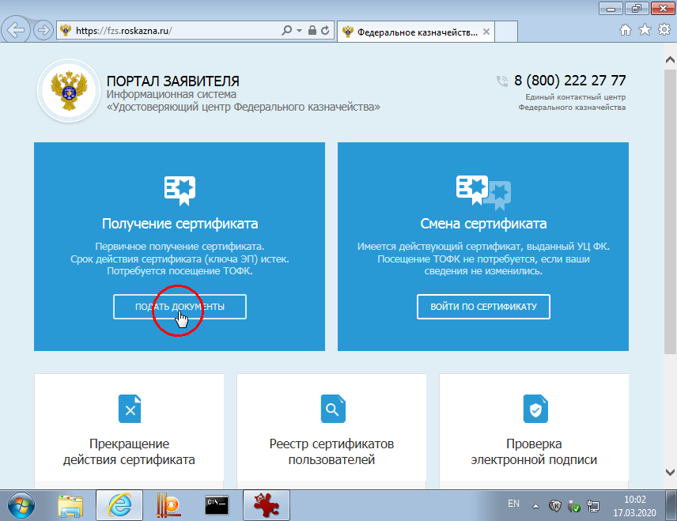
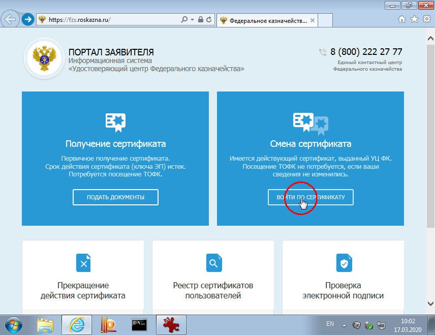
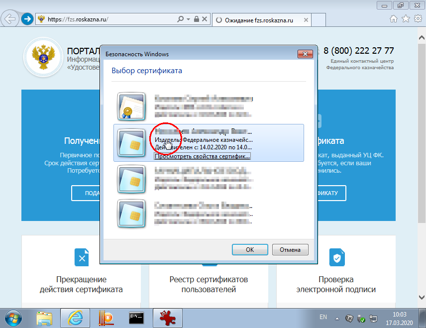
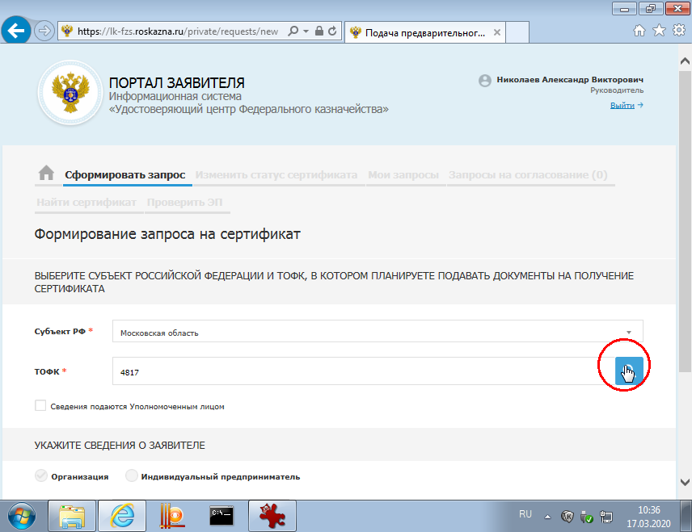
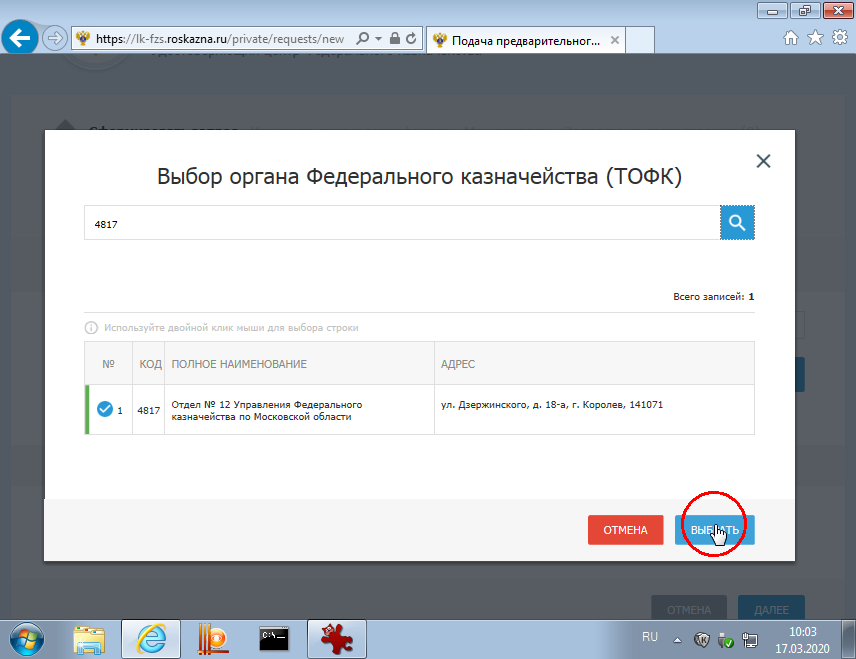
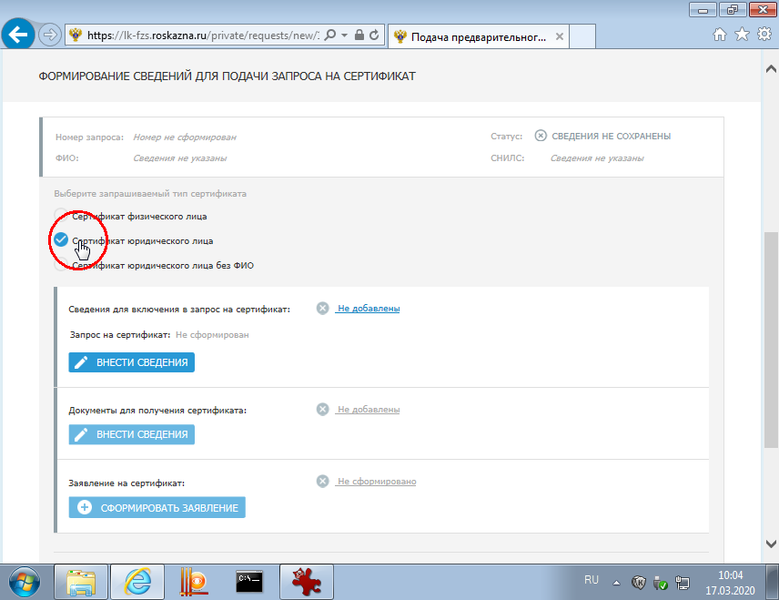
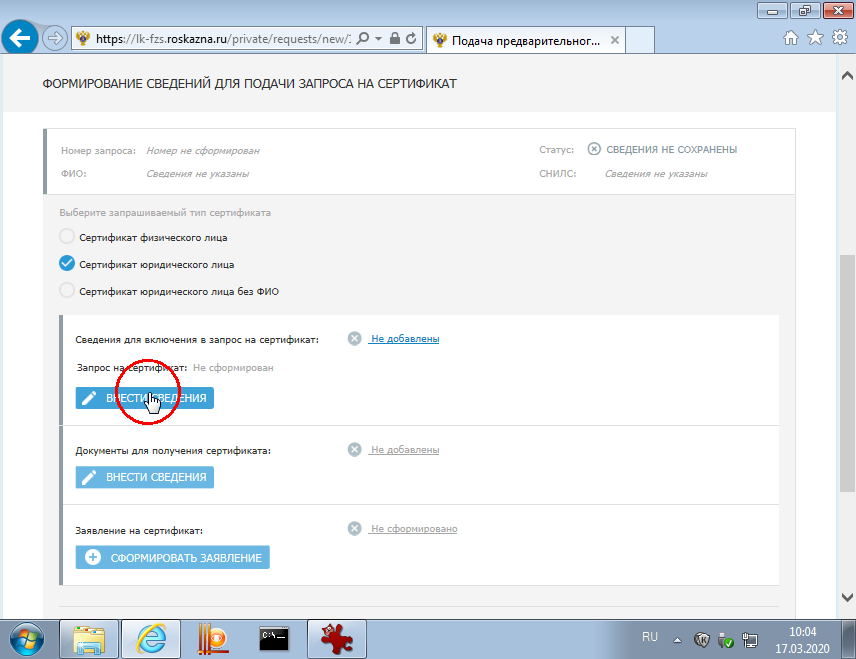
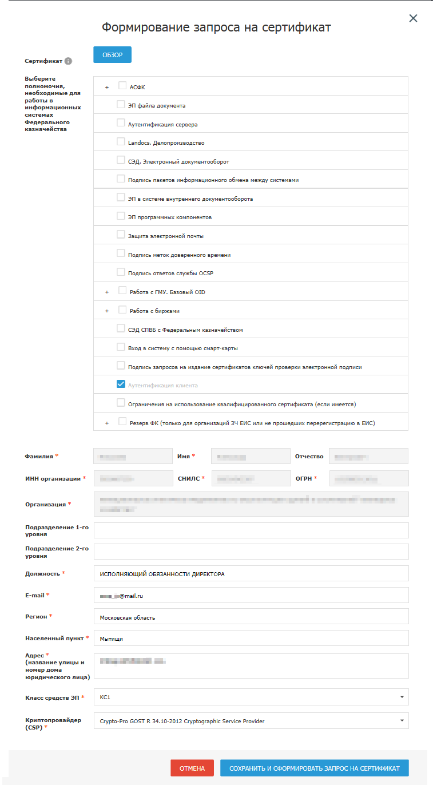

Создание повторного запроса на сертификат юридического лица
Что нужно чтобы начать?
- Настроенная рабочая станция.
- Действующий ключ, выданный Федеральным казначейством - физического или юридического лица.
- Найти на портале проверки ЕГРЮЛ свою организацию.
Вход на портал





Формирование запроса


Ниже представлен пример заполнения запроса.
Обратите внимание на следующие моменты:
- Блок полномочий сертификата (галочки) - ничего добавляю не нужно, оставьте только уже нажатую Аутентификацию клиента.
- Должность заполняется так, как указано в ЕГРЮЛ - проще всего скопировать со странички ЕГРЮЛа.
- Адрес - аналогично должности, нужно указать улицу и дом.
